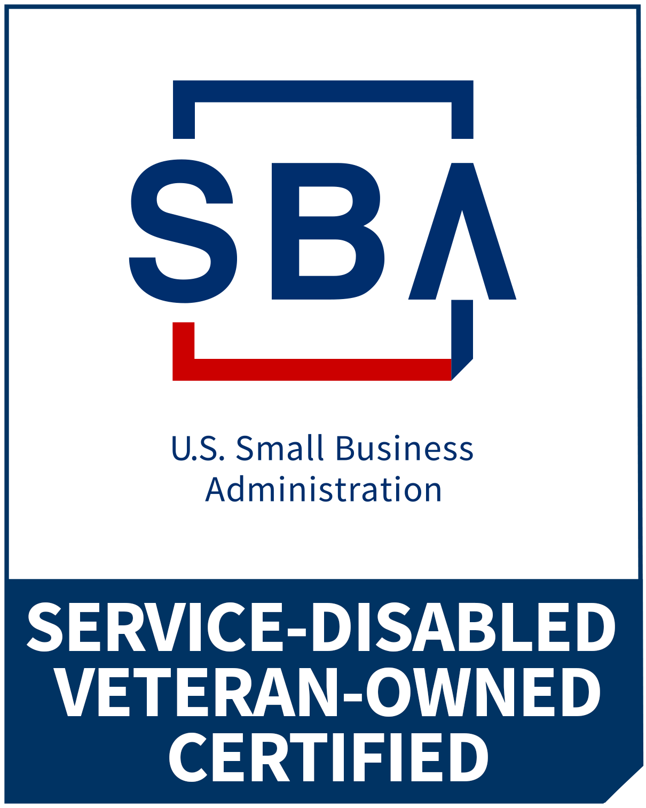

Government Contracting
Geospatial capture and site intelligence for public agencies and federal primes.
Axis Fields LLC is an SBA-certified Service-Disabled Veteran-Owned Small Business and Veteran-Owned Small Business, a City of Phoenix-certified Small Business Enterprise, and an active SAM.gov registrant. We provide aerial mapping, reality capture, GIS-ready data, infrastructure documentation and construction-site intelligence for public agencies, federal primes and project teams.
Procurement information
- LEGAL NAMEAxis Fields LLC
- SBA STATUSSDVOSB and VOSB (SBA VetCert)
- LOCAL STATUSCity of Phoenix SBE
- SAM.GOVActive registration
- UEIQRSUT7JCXTJ3
- CAGE CODE26BH8
- PRIMARY NAICS541370 Surveying and Mapping (except Geophysical) Services
- ADDITIONAL NAICS541360 Geophysical Surveying and Mapping Services
541620 Environmental Consulting Services
541922 Commercial Photography
541990 All Other Professional, Scientific and Technical Services - PSC CODEST002 Cartography
T008 Photogrammetry
T009 Aerial Photographic
T014 Topography - SERVICE AREAArizona, with travel by arrangement
- POINT OF CONTACTinfo@axisfields.com

 City of Phoenix — Certified SBE
City of Phoenix — Certified SBE
Verify SBA certificationCity of Phoenix certified-firm directory
Core competencies
- Aerial mapping: orthomosaics, elevation models and 3D site models
- Reality capture of structures and facilities as measurable 3D records
- Infrastructure documentation for bridges, towers and public facilities
- Construction-site documentation on a dated, repeatable schedule
- GIS-ready deliverables in the formats agency and engineering teams already run
- Aerial imagery and video of property, land and public assets
Differentiators
- Founded by a Marine Corps veteran with a professional background in GIS and enterprise ESRI systems
- Standing FAA wide-area authorization for Luke AFB Class D airspace through September 2028
- Scope, access and airspace settled before anything is flown
- A written statement with every delivery saying what was captured and what was not
- One accountable point of contact from planning through delivery
Project examples
Gillespie Dam Bridge, Arlington, Maricopa County. A National Register steel truss bridge documented as a measurable 3D record.
Verrado Marketplace, Buckeye. Aerial documentation of a commercial development during active construction.
Subcontracting & teaming
Available as a subcontractor or teaming partner to primes and project teams that need aerial capture, reality capture or GIS-ready site data in Arizona.
Send the scope, location and schedule and we will tell you plainly whether it fits.
Start with the scope.
A short call covers the work, the site and the airspace. No obligation.